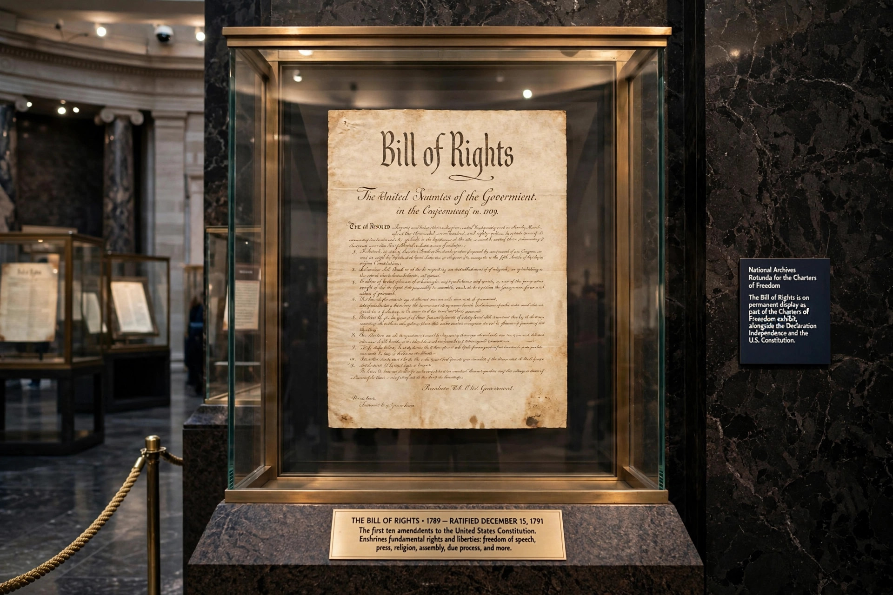

The Fourth Amendment to the United States Constitution prohibits unreasonable searches and seizures and requires that judicially sanctioned warrants be supported by probable cause and describe with particularity the place to be searched and the persons or things to be seized. It is part of the Bill of Rights, ratified on 15 December 1791, and was a response to the abusive use of general warrants and writs of assistance by British authorities in the colonial era.
The right of the people to be secure in their persons, houses, papers, and effects, against unreasonable searches and seizures, shall not be violated, and no Warrants shall issue, but upon probable cause, supported by Oath or affirmation, and particularly describing the place to be searched, and the persons or things to be seized.
Colonial opposition to general warrants — most famously James Otis's argument against the writs of assistance in 1761, which John Adams later called the birth of American independence — and the English decision in Entick v. Carrington (1765) supplied the amendment's intellectual background. Several state constitutions, notably the Virginia Declaration of Rights (1776) and the Massachusetts Constitution (1780), contained similar protections drafted before the federal amendment.
The Supreme Court has held that a "search" occurs when the government violates a person's reasonable expectation of privacy (Katz v. United States, 1967) or physically intrudes on a constitutionally protected area to obtain information (United States v. Jones, 2012). A "seizure" of a person occurs through physical force or submission to a show of authority. Warrantless searches are presumptively unreasonable, subject to many exceptions, including consent, exigent circumstances, search incident to arrest, the automobile exception, and plain view.
Notable doctrines include the stop-and-frisk exception of Terry v. Ohio (1968), based on reasonable suspicion; probable cause determinations under the totality of the circumstances (Illinois v. Gates, 1983); and heightened protection for digital information in Riley v. California (2014), requiring a warrant to search a cell phone incident to arrest, and Carpenter v. United States (2018), restricting warrantless acquisition of historical cell-site location records.
The principal remedy for a Fourth Amendment violation is the exclusionary rule: evidence obtained unlawfully is inadmissible in the prosecution's case-in-chief. The rule was applied to federal cases in Weeks v. United States (1914) and to the states, through the Fourteenth Amendment, in Mapp v. Ohio (1961). Exceptions include good-faith reliance on a defective warrant (United States v. Leon, 1984), inevitable discovery, and attenuation. Civil damages actions and the doctrine of qualified immunity supply additional, contested remedies.
From Wikipedia, the free encyclopedia.